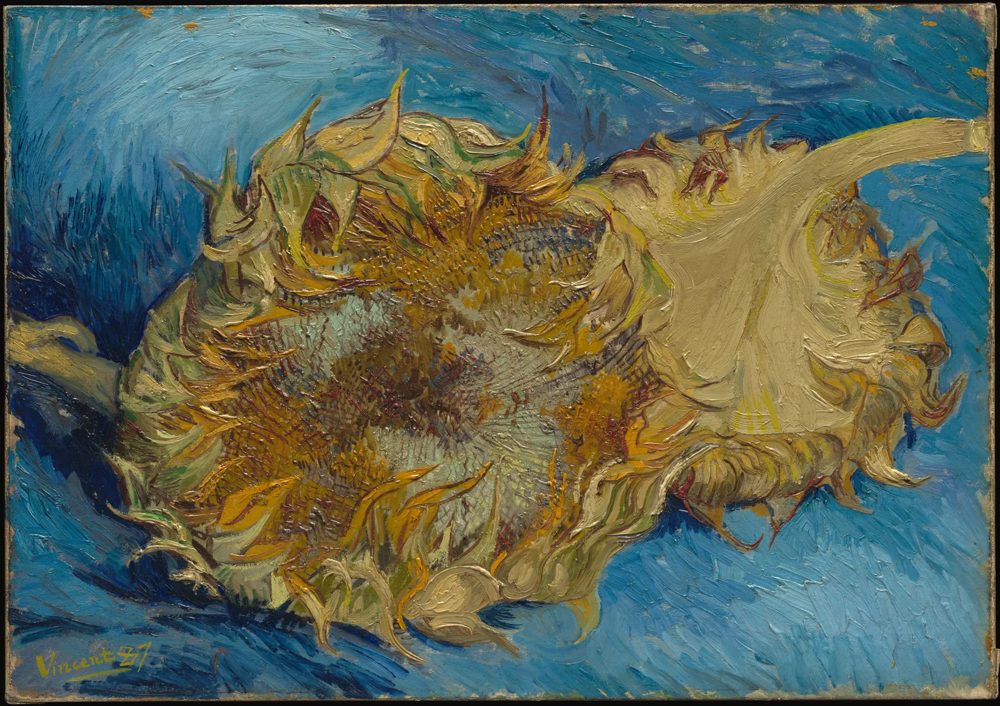

대비
동네 게시판에 포스터 여섯 장이 붙어 있다. 길을 걷다 보면 그중 한 장만 먼저 눈에 들어온다. 더 크지도, 더 비싼 종이도 아닌데 왜 그 한 장일까. 답은 대개 "다름"이다. 둘레와 얼마나, 그리고 어떤 식으로 다른가. 이 장은 색이 서로 다를 수 있는 일곱 가지 방식을 하나씩 만져 보고, 그 다름으로 시선이 머물 곳을 만드는 법, 그리고 다름을 너무 많이 만들면 오히려 아무것도 보이지 않게 되는 이유를 살핀다.
- 이텐의 일곱 가지 대비(색상·명암·한난·보색·동시·채도·면적)를 구별하고 예를 들 수 있다.
- 명도가 같은 두 색은 색상이 아무리 달라도 글자와 형태가 잘 읽히지 않는다는 것을 확인한다.
- 보색 잔상과 면적 대비를 직접 실험하고, 괴테의 면적 비율이 측정값이 아니라 역사적 제안임을 안다.
- 대비 하나로 초점을 만들고, 대비를 여러 개 겹치면 초점이 흩어지는 모습을 눈길 지도로 본다.
- 포스터 시안을 일곱 대비로 평가하고 "어느 대비를 어디에 쓸지" 고르는 판단을 연습한다.
눈에 띈다는 것
눈은 같은 것보다 다른 것을 먼저 본다. 회색 자갈밭의 빨간 단추, 조용한 도서관의 기침 소리처럼 둘레와 다른 것이 주의를 끈다. 미술과 디자인에서는 이렇게 나란히 놓인 두 색이 서로의 차이를 드러내는 것을 대비(Contrast)라고 부른다. 대비는 한 가지가 아니다. 밝기가 다를 수도, 색상이 다를 수도, 선명함이 다를 수도, 차지하는 넓이가 다를 수도 있다. 아래 그림의 게시판에서 어느 포스터가 먼저 보이는지, 그리고 그 포스터가 둘레와 무엇이 다른지 생각해 본다.
그림의 다섯 장은 색상만 놓고 보면 꽤 다르다. 초록, 분홍빛 갈색, 연보라, 누런 베이지, 청회색. 그런데도 묻힌다. 밝기와 탁한 정도가 거의 같기 때문이다. 반면 가운데 아래 한 장은 바탕보다 제목이 훨씬 밝고, 어두운 책 그림이 아래를 받친다. 여기에 작은 주홍 원 하나가 초록 바탕과 반대편 색으로 박혀 있다. "다르다"는 말 안에 여러 종류가 섞여 있고, 그 종류마다 힘이 다르다는 것이 이 장의 출발점이다.
이텐의 일곱 가지 대비
"다름"의 종류를 처음으로 체계 있게 나눈 사람 중 하나가 스위스의 화가이자 교육자 요하네스 이텐(Johannes Itten, 1888–1967)이다. 이텐은 1919년부터 1923년까지 독일의 미술·디자인 학교 바우하우스에서 모든 신입생이 거치는 기초 과정을 가르쳤고, 그 뒤 수십 년의 수업을 『색채의 예술』(Kunst der Farbe, 1961)로 정리했다. 이 책에서 그는 색이 서로를 돋우는 방식을 일곱 가지 대비로 나누었다. 오늘날 미술 교육과 디자인 교재 대부분이 이 분류를 어떤 형태로든 이어 쓴다.
| 대비 | 무엇이 다른가 | 이텐의 설명(요약) |
|---|---|---|
| 색상 대비 | 색상(빨강·노랑·파랑…) | 선명한 순색끼리 맞붙을 때 생긴다. 노랑·빨강·파랑 세 원색이 맞붙을 때 가장 강하고, 색상이 원색에서 멀어질수록 약해진다고 보았다. |
| 명암 대비 | 밝기 | 흰색과 검정 사이의 대비. 색이 있든 없든 모든 그림의 바탕이 되는 대비로 다루었다. |
| 한난 대비 | 따뜻함·차가움 | 빨간 주황을 가장 따뜻한 극, 청록을 가장 차가운 극으로 놓고, 둘 사이의 색은 옆에 무엇이 오느냐에 따라 따뜻하게도 차갑게도 보인다고 설명했다. |
| 보색 대비 | 색상환의 반대편 | 섞으면 회색이 되는 두 색을 보색이라 하고, 나란히 놓으면 서로를 가장 선명하게 만든다고 보았다. |
| 동시 대비 | (눈이 만드는 색) | 눈은 어떤 색을 보면 그 보색을 스스로 요구하며, 실제로 없는 그 색을 둘레에 덧입힌다고 설명했다. |
| 채도 대비 | 선명함 | 선명한 색과 탁한 색의 대비. 탁한 색 옆의 선명한 색은 더 선명해 보이고, 선명한 색 옆의 탁한 색은 더 탁해 보인다. |
| 면적 대비 | 넓이 | 두 색이 차지하는 넓이의 비율. 색마다 "힘"이 달라 균형을 이루는 넓이가 다르다고 보고, 괴테의 수치를 빌려 비율을 제안했다. |
표만 보면 비슷비슷해 보인다. 손으로 하나씩 만져 보는 편이 빠르다. 아래 탐색기에서 대비를 하나 고르고, "대비의 세기"를 0에서 끝까지 밀어 본다. 세기가 0이면 그 대비가 전혀 없는 상태, 끝까지 밀면 그 대비만 가장 강하게 남긴 상태다. 각 칸에서 다른 대비는 되도록 고정해 두었다. 예를 들어 색상 대비 칸의 색들은 명도를 같게 맞췄다.
일곱 대비 탐색기
마지막 칸 "함께 변한 다른 대비"를 눈여겨볼 만하다. 보색 대비를 세게 하면 한난 대비도 함께 세진다(주황과 파랑은 보색이면서 동시에 따뜻함과 차가움의 짝이다). 채도 대비를 세게 하면 선명한 쪽이 조금 밝아 보인다. 일곱 대비는 일곱 개의 독립된 손잡이가 아니라, 같은 색 한 쌍을 일곱 가지 눈으로 본 것에 가깝다. 이텐의 분류가 쓸모 있는 이유는 "이 두 색이 왜 강하게 부딪히는가"를 말로 짚을 수 있게 해 주기 때문이다.
명암 대비가 먼저다
일곱 대비 중 하나만 고르라면 대부분의 화가와 디자이너는 명암 대비를 고른다. 6장에서 본 대로 눈은 형태와 글자를 주로 밝기 차이로 읽는다. 색상 차이는 아무리 커도 밝기 차이를 대신하지 못한다. 직접 확인해 본다. 아래는 가을 행사 포스터의 제목 띠다. 바탕은 초록, 제목 색은 두 슬라이더로 정한다. 하나는 바탕과의 색상 차이, 다른 하나는 명도 차이다.
색상만 다를 때, 명도도 다를 때
명도가 같고 색상만 다른 두 색이 맞닿으면 경계가 떨리거나 흔들려 보인다. 이런 상태를 등휘도(Equiluminance, 같은 휘도)라고 한다. 신경과학자 마거릿 리빙스턴(Margaret Livingstone)은 『시각과 미술』(Vision and Art: The Biology of Seeing, 2002)에서, 사람의 시각 경로 중 움직임·깊이·위치를 담당하는 쪽은 색을 거의 보지 못하고 밝기 차이만 본다고 설명하며, 모네의 「인상, 해돋이」에서 해가 둘레 하늘과 휘도가 거의 같아 일렁여 보이는 것을 그 예로 들었다. 화가는 이 떨림을 일부러 쓰기도 한다. 하지만 읽혀야 하는 글자에서는 피해야 할 상태다.
밝기 차이를 숫자로 재는 가장 흔한 방법은 웹 접근성 지침 WCAG 2의 대비비(Contrast ratio)다. 두 색의 상대 휘도(빛의 세기를 눈의 감도로 가중한 값, 0~1)를 비교한다.
시뮬레이터의 세 숫자를 비교하면 이 장의 핵심 하나가 보인다. 색차(ΔE)는 "얼마나 다른가"를, 대비비는 "얼마나 읽히는가"를 잰다. 빨강과 초록은 색차로는 아주 멀지만, 명도가 같으면 대비비는 1에 가깝다. 대비로 무언가를 강조하고 싶다면 먼저 명암 대비로 뼈대를 세우고, 색상 대비는 그 위에 얹는 것이 안전하다.
한난 대비와 보색 대비
빨강·주황·노랑 쪽을 따뜻한 색, 파랑·청록 쪽을 차가운 색이라고 부른다. 이 구분은 온도계로 잴 수 있는 성질이 아니라 불, 햇빛, 물, 그늘 같은 경험에서 온 연상에 가깝다. 색이 실제 체감 온도까지 바꾼다는 주장은 오래된 통설이지만, 연구 결과가 엇갈리고 효과가 있더라도 작다고 보는 편이 안전하다. 그래도 한난 대비(Warm–cool contrast)는 그림에서 분명한 일을 한다. 대표적인 것이 공간감이다.
보색(Complementary colors)은 색상환에서 서로 반대편에 있는 두 색이다. 이텐은 보색을 "섞으면 회색이 되는 짝"으로 정의하고, 나란히 놓으면 서로를 가장 선명하게 만든다고 보았다. 다만 5장에서 본 대로 "반대편"이 어디인지는 색상환마다 다르다. 화가의 전통 색상환(RYB)에서 초록의 보색은 빨강이지만, 사람의 지각에 맞춘 색상환(OKLCH)에서는 자홍에 가깝다. 이 장에서는 이 차이를 기억하되, 보색 대비를 "색상이 크게 떨어진 두 색이 서로를 돋우는 일"로 넓게 쓴다.
보색이 서로를 돋우는 이유 중 하나는 눈의 피로에서 찾을 수 있다. 한 색을 오래 보면 그 색에 반응하는 신호가 지쳐서, 흰 바탕으로 눈을 옮겼을 때 반대 색이 잠깐 떠오른다. 이것을 잔상(Afterimage), 정확히는 음성 잔상이라 한다. 아래에서 직접 겪어 본다.
잔상으로 보는 보색
잔상의 색은 대략 본 색의 보색 쪽에 뜬다. 그래서 주홍 옆에 청록을 두면, 주홍을 보던 눈이 옆으로 갈 때 이미 청록 쪽으로 기울어 있어 청록이 더 진하게 느껴지고, 반대도 마찬가지다. 이텐이 "보색은 서로를 가장 선명하게 만든다"고 한 현상을 눈의 쪽에서 설명하는 한 가지 방식이다. 엄밀히는 잔상(시간 차이)과 아래에서 볼 동시 대비(공간 차이)가 서로 다른 현상이지만, 둘 다 눈이 "반대쪽 색"으로 기운다는 공통점이 있다.
동시 대비와 채도 대비
동시 대비(Simultaneous contrast)는 실제로는 없는 색을 눈이 덧입히는 현상이다. 중간 회색을 선명한 바탕 위에 올리면, 회색이 바탕의 보색 쪽으로 물들어 보인다. 이텐은 이것을 "눈이 보색을 요구한다"고 표현했다. 아래 네 칸의 작은 정사각형은 모두 같은 회색이다.
동시 대비는 디자이너에게 실무 문제다. 회색 글자, 회색 아이콘, 무채색 사진을 선명한 바탕에 올리면 의도하지 않은 색이 낀다. 반대로 화가는 이것을 이용한다. 그림자를 회색으로 칠해도 둘레가 따뜻한 주황이면 그림자는 푸르게 보인다.
채도 대비(Saturation contrast)는 선명함의 차이다. 이텐은 이것을 "질의 대비"라고 불렀다. 같은 초록이 회색빛 바탕 위에서는 선명하게, 형광에 가까운 초록 바탕 위에서는 탁하게 보인다. 7장에서 "탁한 색으로 선명한 색을 살린다"고 한 요령이 바로 채도 대비를 쓰는 일이다. 일곱 대비 탐색기의 "채도" 칸에서 가운데 칸은 양쪽 모두 같은 색이다. 세기를 올리면 왼쪽(탁한 바탕)의 가운데 칸은 살아나고, 오른쪽(선명한 바탕)의 가운데 칸은 바랜다.
면적 대비
같은 두 색도 넓이를 바꾸면 전혀 다른 그림이 된다. 넓은 초록 들판의 작은 빨간 지붕과, 넓은 빨간 벽의 작은 초록 창은 같은 두 색인데 인상이 다르다. 이것이 면적 대비(Contrast of extension)다. 이텐은 『색채론』(Zur Farbenlehre, 1810)을 쓴 독일의 시인이자 색채 이론가 괴테(Johann Wolfgang von Goethe, 1749–1832)의 것으로 소개한 색의 "빛의 값"을 가져와 면적의 균형을 계산했다. 노랑 9, 주황 8, 빨강 6, 초록 6, 파랑 4, 보라 3. 밝고 힘센 색일수록 작은 넓이로 충분하다는 생각이다. 그래서 노랑과 보라가 균형을 이루는 넓이는 빛의 값의 역수, 곧 노랑 1 대 보라 3이 된다.
면적 대비: 괴테의 균형과 내 눈의 균형
마지막 해볼 것에서 본 장면, 아주 작은 노랑이 넓은 보라 위에 박히는 장면이 다음 절의 주제다. 면적의 균형을 일부러 깨면 작은 쪽이 강조점이 된다. 동양화의 여백도 넓은 빈 면과 작은 먹의 대비로 읽을 수 있다. 큰 화면에 작은 낙관 하나가 붉게 찍히는 것도 마찬가지다.
초점 만들기
포스터, 그림, 화면에는 대개 "먼저 봐야 할 곳"이 있다. 이것을 초점(Focal point)이라고 한다. 초점은 둘레와 가장 많이 다른 곳에 생긴다. 그러니 초점을 만드는 일은 대비를 한곳에 모으는 일이고, 동시에 다른 곳의 대비를 줄이는 일이다.
시선이 어디로 가는지를 재는 정식 방법은 시선 추적 장치로 사람들의 눈을 실제로 기록하는 것이다. 여기서는 그 대신 아주 거친 모형을 쓴다. 그림을 작은 칸으로 나누고, 각 칸의 색이 그 둘레의 평균색과 얼마나 다른지(OKLab 색 거리, 명도 차이에 조금 더 무게를 둔다)를 재서 클수록 밝게 칠한다. 이렇게 "가운데와 둘레의 차이"로 눈길을 어림하는 생각은 이티·코흐·니버의 시각 주의 모형(Itti, Koch & Niebur, 1998)에서 온 것이지만, 이 장의 모형은 그것을 크게 단순화한 것이다. 이 지도를 이 장에서는 눈길 지도라고 부른다.
아래 포스터는 서윤의 가을 행사 포스터를 단순하게 만든 가상의 시안이다. 강조할 요소(날짜 배지) 하나를 손잡이로 끌어 옮기고, 어떤 대비로 강조할지 고른다. 오른쪽은 그 포스터의 눈길 지도다.
초점 만들기: 대비 하나로
세 가지가 보인다. 첫째, 색상만 바꾼 강조는 거의 일하지 않는다. 명도와 채도가 바탕과 같으면 둘레와의 차이가 작다. 둘째, 명도와 보색은 모두 강한 강조 수단이지만 무엇과 경쟁하는지가 다르다. 이 포스터의 제목은 이미 크림색(아주 밝은 색)으로 명암 대비를 쓰고 있다. 배지까지 크림색으로 만들면 둘이 같은 수단으로 다투고, 더 굵은 덩어리인 배지가 이겨 제목이 뒤로 밀린다. 주홍 배지는 밝기로는 제목보다 약하지만 색으로 다른 목소리를 내서, 제목과 배지 두 곳이 역할을 나눈다. 셋째, 크게 만든다고 강해지지 않는다. 강조 요소가 커지면 면적 대비가 약해지고 다른 요소와 부딪혀 눈길이 오히려 흩어진다. 더 키우면 결국 그것이 새 바탕처럼 보이기 시작한다.
대비가 너무 많으면
강조가 효과가 있으니 더 많이 하면 더 좋을까. 시안을 다듬다 보면 흔히 이런 일이 생긴다. 제목이 약해 보여 노랗게 바꾸고, 날짜가 안 보여 파란 띠를 깔고, 허전해서 테두리를 넣고, 심심해서 책 그림을 원색으로 칠한다. 하나하나는 그럴듯한데 다 모아 놓으면 아무것도 먼저 보이지 않는다. 아래에서 강조를 하나씩 더해 본다.
강조를 하나씩 더하면
강조를 더할 때마다 "먼저 볼 곳" 후보가 하나씩 늘고, 원래의 초점은 그만큼 몫을 잃는다. 대비는 상대적이라서, 모든 요소가 소리를 지르면 소리를 지르는 것이 평범한 상태가 된다. 그래서 초점을 살리는 가장 강력한 방법은 대개 강조를 더하는 것이 아니라 다른 곳의 대비를 빼는 것이다. 7장의 채도 예산과 같은 생각이다.
그림과 전통 속의 대비
화가들은 이 대비들을 이론보다 먼저 손으로 썼다. 빈센트 반 고흐(Vincent van Gogh, 1853–1890)는 파리에 머물던 1887년, 시든 해바라기 두 송이를 파란 바탕 위에 그렸다. 노랑·주황 계열의 꽃과 파란 바탕은 보색 대비이자 한난 대비의 짝이다.

이 그림은 "명암 대비가 먼저다"라는 앞의 말과 어긋나 보인다. 그렇지 않다. 고흐는 꽃 전체를 바탕과 비슷한 밝기 언저리에 두면서도, 꽃 가운데의 짙은 갈색과 윤곽선으로 명도의 뼈대를 따로 세웠다. 그리고 넓은 면은 색상과 온도의 대비로 진동하게 했다. 대비마다 맡은 일이 다르다. 화면 이미지와 실제 그림의 색은 다르며, 130년 넘는 시간 동안 물감도 변했을 수 있다는 점은 기억해 둔다.
한국의 시각 문화에도 대비를 쓰는 서로 다른 전통이 있다. 아이 옷소매의 색동은 빨강, 노랑, 파랑, 초록, 분홍 같은 선명한 띠를 나란히 이어 붙인다. 색상 대비를 가장 순수하게 쓰는 방식이다. 띠들의 밝기가 제각각이라 명암 대비도 함께 생기고, 띠의 폭을 비슷하게 두어 어느 한 색도 주인공이 되지 않는다. 초점을 만들지 않는 것 자체가 목적인 배색이다. 반대편에는 수묵화가 있다. 색상 대비와 채도 대비를 거의 버리고 먹의 농담, 곧 명암 대비 하나와 넓은 여백(면적 대비)만으로 화면을 짠다. 색이 많아야 강한 그림이 되는 것은 아니다. 어떤 대비를 쓰고 어떤 대비를 버렸는지가 그림의 성격을 정한다.
포스터 대비 평가표
지금까지의 도구를 한데 모은다. 아래는 가상의 가을 행사 포스터 시안 세 개다. 시안 A는 강조를 아끼지 않았고, 시안 B는 모든 것을 차분하게 눌렀고, 시안 C는 제목과 날짜 배지 둘에만 강조를 맡겼다. 시안을 고른 뒤 제목의 명도, 배지의 색상, 배지의 면적을 바꿔 보며 일곱 대비 점수와 눈길 지도가 어떻게 움직이는지 본다. "장식 끄기"는 테두리·밑줄·띠·해 같은 덧붙인 장식을 모두 지운다.
포스터 시안을 일곱 대비로 읽기
평가표가 말해 주는 것은 "몇 점짜리 포스터"가 아니다. 시안 A의 문제는 대비가 강한 것이 아니라, 강한 대비가 여러 곳에 흩어져 있다는 것이다. 시안 B의 문제는 반대로 대비가 어디에도 없다는 것이다. 차분함이 목적이라면 B도 좋은 선택일 수 있다. 하지만 게시판에서 지나가는 사람을 멈춰 세우는 것이 목적이라면, 강한 대비 몇 개를 정해진 자리에 모은 C 쪽이 맞다. 같은 도구도 무엇을 전하려는가에 따라 답이 달라진다.
서윤의 작업 노트
강조를 더할수록 아무것도 안 보였다
7장에서 서윤은 포스터 바탕을 탁한 초록 #567666으로 누르고, 크림색 제목 #ffe2d7 아래에 붉은 잎 하나와 날짜 띠만 #d24f39로 남겼다. 그런데 주인이 시안을 보더니 "가을 행사니까 좀 더 화려하면 좋겠다"고 했다. 10월 둘째 주, 서윤은 시안 세 개를 서점 계산대 옆 게시판에 나란히 붙였다. 시안 A는 주인의 말대로 노란 잎, 파란 날짜 띠, 자홍 테두리, 원색 책등, 큰 주황 해를 더했다. 시안 B는 반대로 제목까지 탁한 초록 #8c9e8f로 눌러 모든 것을 조용하게 했다. 시안 C는 제목은 그대로 두고, 붉은 잎은 탁한 초록으로 눌러 배경 무리에 넣고, 날짜만 #d24f39의 작은 배지로 남겼다.
주인은 A가 "제일 화려하다"고 했지만, 3초만 보여 주고 무슨 행사냐고 묻자 대답을 못 했다. 서윤은 세 시안을 이 장의 일곱 대비로 하나씩 적었다. 이 책의 모델로 계산하면 제목의 WCAG 대비비는 A와 C가 약 4.1, B가 1.77이다. 이 장의 평가표로 보면 A는 일곱 대비 중 여섯이 "강함"이었고 눈길 후보가 다섯 곳으로 흩어졌다. B는 강한 대비가 하나도 없어 지도 전체가 어두웠다("뚜렷한 곳 없음"). C는 "강함"이 다섯으로 A와 거의 같았는데도, 그 대비들이 제목과 배지 두 자리에만 몰려 있어 눈길 후보가 두 곳으로 모였다. 7장에서 남긴 질문("강조가 둘이면 초점이 흩어지지 않을까")에 대한 서윤의 답은 이랬다. 강조가 둘이어도 서로 다른 대비로 역할을 나누면 흩어지지 않는다. 흩어지게 만든 것은 셋째, 넷째 강조였다.
도경은 노트북 화면의 눈길 지도를 신기해하며 한참 들여다보더니, 게시판 앞에서 실눈을 뜨고 말했다. "강조는 소리 지르기랑 같아. 다 같이 소리치면 아무도 안 들려. 누구한테 무슨 소리를 맡길지 정해." 서윤은 도경에게 눈길 지도 보는 법을 알려 주었고, 도경의 실눈 뜨기를 시안 검토의 첫 단계로 적었다. 두 사람이 따져 보니 배지의 #d24f39는 바탕과 명도가 거의 같아(ΔL* 4.5, 대비비 1.18) 흑백에서는 사라졌다. 그래서 배지 안의 날짜 글자는 제목과 같은 크림색으로 써서 명도로 읽히게 했다. 색상은 OKLCH로는 바탕 초록과 약 131° 떨어져 정확한 반대편이 아니지만, 이 책의 RYB 색상환으로는 약 179° 떨어진 화가의 보색이었다.
#567666 위 크림 #ffe2d7, 대비비 약 4.1), 날짜 배지는 보색 대비(#d24f39, 포스터 넓이의 약 2~3%, 날짜 글자는 크림색). 붉은 잎과 부제, 책 그림은 바탕과 같은 초록 계열의 탁한 색과 어두운 색으로 묶는다. 7장의 채도 예산 안에서 선명한 색은 배지 하나만 남긴다(서윤의 선택). 시안 C를 바탕으로 다듬는다.핵심 정리
- 대비는 나란히 놓인 색이 서로의 차이를 드러내는 일이다. 이텐은 이를 색상·명암·한난·보색·동시·채도·면적의 일곱 가지로 나누었다. 실제 색 한 쌍은 여러 대비를 동시에 만든다.
- 명암 대비가 형태와 글자를 읽히게 하는 뼈대다. 명도가 같은 두 색은 색상이 아무리 달라도 경계가 떨리고 흑백에서 사라진다(등휘도). 색차 ΔE는 "얼마나 다른가", WCAG 대비비는 "얼마나 읽히는가"를 잰다.
- 따뜻한 색과 차가운 색의 구분은 연상에 가깝지만 공간감을 만든다. 보색은 색상환의 반대편 색이며, 어느 색상환을 쓰느냐에 따라 위치가 다르다. 보색 잔상과 동시 대비는 눈이 반대쪽 색으로 기우는 현상이다.
- 면적 대비에서 괴테·이텐의 비율(노랑 1 : 보라 3 등)은 측정값이 아니라 역사적 제안이다. 균형을 일부러 깨면 작은 쪽이 강조점이 된다.
- 초점은 대비를 한곳에 모으고 다른 곳의 대비를 줄여서 만든다. 색상만 바꾼 강조는 약하고, 강조 수단끼리 같은 대비를 쓰면 서로 경쟁한다.
- 강조를 많이 더할수록 초점은 흩어진다. 요소마다 대비 하나씩만 맡기고, 초점을 살리고 싶으면 더하기보다 빼기를 먼저 시도한다.
확인 퀴즈
1. 초록 바탕 위의 빨간 제목이 색차 ΔE로는 아주 큰데, 흑백으로 바꾸자 제목이 거의 사라졌다. 가장 알맞은 진단과 처방은?
2. 이텐이 괴테의 "빛의 값"(노랑 9, 보라 3)을 빌려 제안한 노랑과 보라의 균형 면적비와, 그 비율의 성격으로 옳은 것은?
3. 포스터 시안에 노란 제목, 파란 날짜 띠, 자홍 테두리, 큰 주홍 배지, 원색 책 그림을 모두 넣었더니 무엇이 먼저 보이는지 알 수 없게 되었다. 가장 먼저 해 볼 일은?
4. 같은 중간 회색 정사각형이 빨간 바탕 위에서는 푸르스름하게, 초록 바탕 위에서는 분홍빛으로 보인다. 이텐의 분류로 이 현상의 이름은?